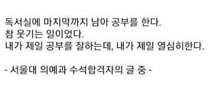
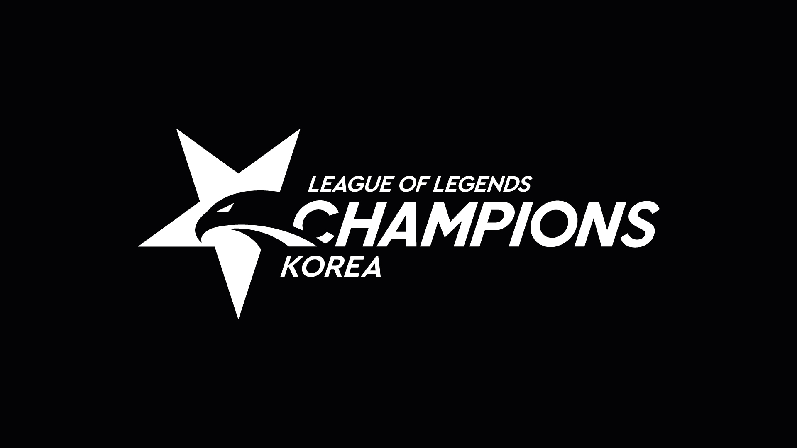

이승윤의 사이트(개발중, 피드백 환영)
우리학교 급식 알아보는 사이트
- 월간 급식 알아보기
대학교 입학처 검색 사이트

- 서울대학교 입학처
- 경북대학교 입학처
-
계속 추가중. 피드백 ㄱㄱ.
롤 전적검색 사이트
- op.gg(대표적인 롤 전적검색 사이트)
- fow.kr(대표적인 롤 전적검색 사이트 2)
- your.gg(팀운 측정기 탑재)
- poro.gg(학교 와이파이로 막히지 않는 전적검색기)
롤드컵 시청 가능 사이트

- 유튜브 Lck 채널
- Lck 트위치 스트리밍 사이트